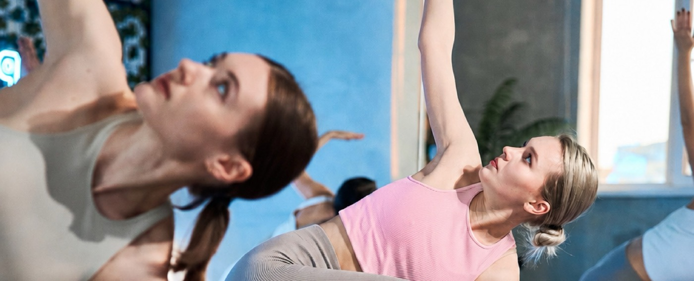

Фитнес для девушек · Краснодар
Пилатес
Дыхание и плавные движения
Записаться на пробное
Кому подойдёт
Если хотите укреплять мышцы корпуса и работать над осанкой в спокойном темпе.
Как проходит занятие
На занятии движения сочетают с дыханием. Упражнения направлены на контроль положения тела, устойчивость и координацию.
Занятия в студиях
Северная, 324А
Уточните у администратора условия посещения и ограничения перед первым занятием.
1 Мая, 188
Описание · 1 Мая
Сочетание глубокой дыхательной практик и плавных и контролируемых движений, направленных на укрепление глубоких мышц всего тела, улучшение гибкости, мобильность суствов, коррекция осанки. Тренировка проходит в умеренном темпе, без ударной нагрузки на суставы.
Противопоказания · 1 Мая
острые инфекционные и воспалительные заболевания, повышенная температура. Недавние травмы и операции без разрешения врача. Острые боли в позвоночнике, мышцах и суставах невыясненной причины. Обострение заболеваний опорно-двигательного аппарата. Серьёзные сердечно-сосудистые заболевания, при которых противопоказана физическая нагрузка. Беременность. Выраженные нарушения равновесия и координации, препятствующие безопасному выполнению упражнений. Любые состояния, при которых врач рекомендовал временно исключить физическую активность.
Трудовой Славы, 6
Описание · Трудовой Славы
Система упражнений, направленная на укрепление глубоких мышц, развитие гибкости и формирование правильной осанки. Особое внимание уделяется контролю движений, дыханию и точности выполнения упражнений. Тренировка позволяет проработать мышцы всего тела, улучшить баланс и сформировать сильный и функциональный мышечный корсет.
- Укрепление глубоких мышц живота и спины;
- формирование правильной осанки;
- развитие гибкости и подвижности суставов;
- улучшение координации и баланса;
- укрепление мышечного корсета и повышение мышечного тонуса.
Одежда: удобная спортивная форма, носки (желательно с нескользящей подошвой).
Противопоказания · Трудовой Славы
острые инфекционные и воспалительные заболевания, повышенная температура. Недавние операции и травмы без разрешения врача. Острые боли в позвоночнике, мышцах и суставах. Обострение заболеваний опорно-двигательного аппарата. Межпозвоночные грыжи и протрузии с выраженными симптомами. Серьёзные сердечно-сосудистые заболевания. Беременность требует индивидуальной адаптации упражнений и согласования с врачом.